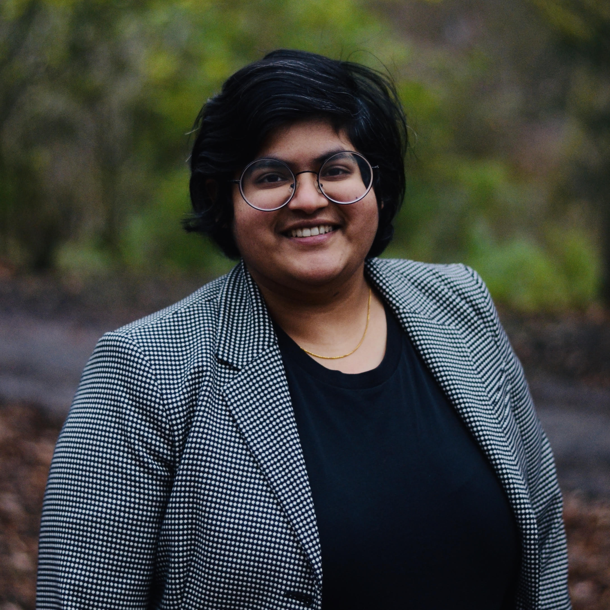

Sai Chandana Divi
Room 3.140, Gemini-zuid
Multi-scale Engineering and Fluid Dynamics
Department of Mechanical Engineering
Eindhoven University of Technology
Eindhoven 5600MB, The Netherlands
LinkedIn · Google scholar · https://orcid.org/0000-0003-4663-9806 · Scopus ID: 57216759302